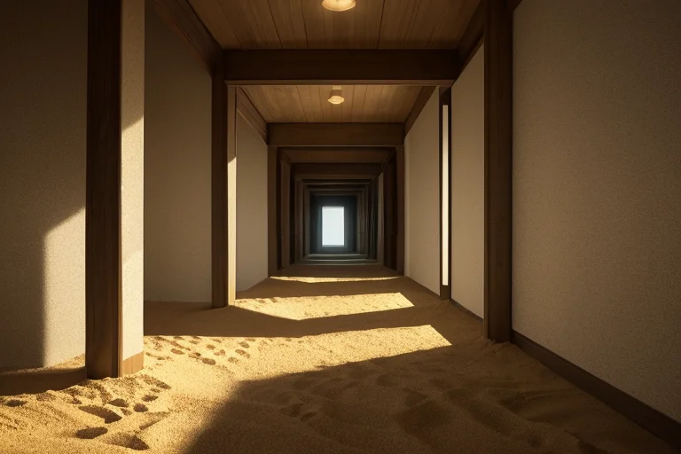

第一章 現実の鳥取
あなたはまだ気づいていない。この土地にも、王がいることを。
鳥取砂丘の砂は、昼間の熱を急速に逃がし、夜の冷気を深く吸い込む。その温度差は、この地の「歪み」を物語っていた。日本海から吹き付ける風が砂を彫り、幾重にも波紋を刻む。その砂丘の一角、砂の美術館の地下深く、トットリア・デザートは眠っていた。砂封印の下で。彼の王国は、砂丘と孤高の王国。紋章は砂丘波と孤円。色は砂色と黒。彼は孤砂王と呼ばれる。
彼の傍らには、主席妖精デザリアが砂のように静かに佇む。役割は乾燥波の緩和。もう一人、地域特化妖精サキュリアは、砂丘そのものの形状を微調整する。彼らのペアダイナミクスは、無駄を一切削ぎ落とす。言葉も、動作も、感情の揺らぎさえも。
ここには、豊かなものと荒涼たるものが同居する。日本一の砂漠的地形と、大山から湧き出る清冽な水。浦富海岸の複雑な岩肌と、三朝温泉の穏やかな湯気。松葉がにの鋭い甲羅と、二十世紀梨の柔らかな果肉。全ては対極にあるが、この土地の現実だ。
王は目を閉じたまま、歪みを感じ取る。地中の微かな軋み、大気の乾燥した震えを。彼は調整者であって、ヒーローではない。災害を消すことはできない。ただ、緩和し、遅延させ、偶然を微調整するだけだ。
彼は長く、孤独に耐えてきた。それが彼の役割だと思っていた。しかし、この土地の感情密度は、彼の静謐な眠りを、ほんの少し揺るがし始めていた。
第二章 歪みの兆候
鳥取砂丘の夜は、月明かりに照らされた砂の海が、静寂そのもののように見える。しかし、孤砂王トットリア・デザートの知覚には、異変が響いていた。砂の下、深く封印された「歪み」の胎動だ。それは微かな、乾いた軋みのようなものだった。長い年月をかけて築いた砂の封印が、ほんのわずか、劣化し始めている。
彼の傍らで、主席妖精デザリアが砂色の瞳を凝らす。「乾燥波が、予測範囲を超えて増幅しています。浦富海岸の岩盤に、微小な亀裂が生じる確率が、0.7%上昇」
王は頷いた。調整を開始する。砂丘の稜線を流れる風の向きを変え、大山から流れ下る清冽な水気をほんの少しだけ誘導し、乾ききった大気に潤いを送り込む。全ては目に見えない微調整だ。災害を消すのではなく、その爪先を鈍らせ、ほんの一瞬、逃げる時間を生み出すための。
しかし、いつもと違う感覚があった。これまで、孤独は彼の武器だった。無駄な感情に振り回されず、淡々と調整を行うために。今、その孤独の中に、封印の軋みと共に、ある「焦り」のようなものが忍び込んでいることに、彼は気づき始めていた。

第三章 王の葛藤
砂の美術館の静かな展示室。緻密に固められた砂の彫刻は、崩れることのない美しさで佇んでいる。トットリアはその前に立ち、自らの内側を見つめた。砂封印の軋みは、彼の内なる「孤円」にひびを入れ始めていた。これまで、孤独は完璧な調整を可能にする味方だった。感情の雑音がなく、計算は常に直線的で正確だった。
しかし今、その孤独そのものが、重い問いを投げかけている。封印を維持し、この静謐な均衡を保つべきか。それとも、軋みの原因である自らの中に芽生えつつある「焦り」──それはおそらく、大山の伏流水のように冷たく清らかな「心」の始まりなのか──を解放すべきか。解放すれば、砂丘はより活発に動き、乾燥波の制御は難しくなるかもしれない。無駄な感情は、無駄なリスクを生む。
デザリアが砂時計のようにつぶやいた。「主よ、無駄を削ぎ落とすことが、我が王国の理です」
「わかっている」トットリアは答えた。だが、削ぎ落とすべきは、この新たな軋みなのか。それとも、軋みを無視し続けるという、より大きな無駄なのか。孤高の王は、初めて味方であるはずの孤独に、背を向けられているような気がした。
第四章 妖精との対話
砂の美術館の闇の中で、デザリアの声は乾いた砂のように落ちた。「主よ、我々は『封じる』ことを選びました。かつて、この地の歪みは『乾き』として現れました。大地を裂き、命を枯らす。それを『砂丘』という形に収束させ、この一域に封じ込めたのです。浦富海岸の荒波も、大山の雪解け水も、その均衡の一端を担っています」
トットリアは黙って聞いた。砂丘は歪みの栓であり、自分はその管理者に過ぎない。
「封じられた力は、感情という『湿り気』を嫌います。湿気は砂を固め、動きを鈍らせる。しかし同時に、崩落を防ぐ接着剤にもなります」デザリアの目がかすかに光った。「主が感じ始めた『軋み』。それは、接着剤としての湿気かもしれません。あるいは、封印を緩める腐食水かもしれません」
孤独は敵か味方か。封じ込めるための孤高か、それとも封じ込められたことによる孤独か。答えは、砂のように掌からすり抜ける。
第五章「微調整と余韻」
大山の湧水は、冷たく澄んでいた。トットリアはその水を掌に受け、砂丘の中心へと注いだ。一滴、また一滴。感情という湿り気は、封印の砂をわずかに固着させ、崩壊を遅らせる接着剤となる。彼はかつてない集中力で、地中の「歪み」を感じ取り、砂の粒子一つひとつの位置を微調整していく。浦富海岸の岩肌に打ち寄せる波のリズム、三朝温泉の地熱の脈動。全ての情報を、孤高の感覚で濾過し、必要な調整だけを抽出する。デザリアとサキュリアは無言で彼を取り囲み、乾燥波を精密に制御した。無駄な動きは一切ない。かつて因幡の白兎が蒲の穂に助けられたように、今は砂が王を支える。
調整は完了した。地震の規模は一段階抑えられ、次の乾燥波のピークは数日ずれた。しかしトットリアの胸には、冷たい水の感触が残っていた。それは、孤独という砂漠に降った、初めての雨の記憶だった。彼は砂丘の頂に立ち、広がる砂の波紋を見下ろす。封じた力は静かに眠り続ける。彼が感じた軋みは、封印の緩みではなく、彼自身の内側で何かが結晶し始めた音なのかもしれない。
孤独は敵か味方か。答えはまだ砂の中に埋もれている。ただ、今夜も砂丘の風は、ほんの少しだけ、かつてない湿り気を運んでいる。
あなたの町にも、王がいる。